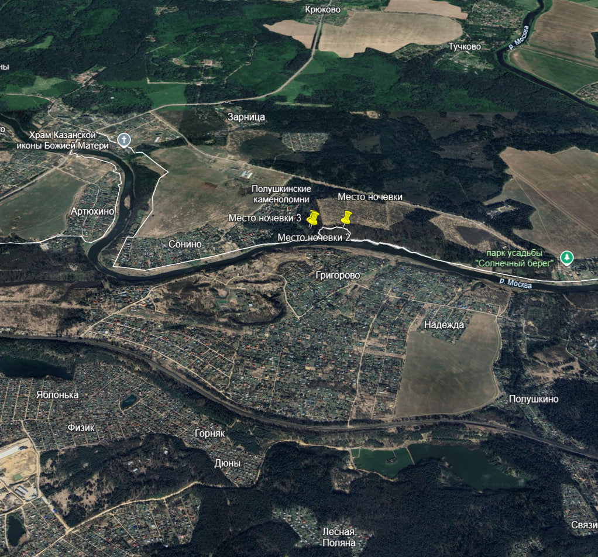

Путешествие начинается со станции Полушкино. Через подвесной мост - к дачному посёлку, утопающему в зелени. Воздух пахнет сосной и рекой. Маршрут ведёт вдоль высокого берега Москвы-реки, между сосновым бором и панорамами воды. Мелькают деревенские домики с резными наличниками. Красота - в смене ландшафтов, игре света и сезонных красок. Остановитесь, чтобы услышать шум леса и плеск воды. Это дорога для чувств, а не спешки.
